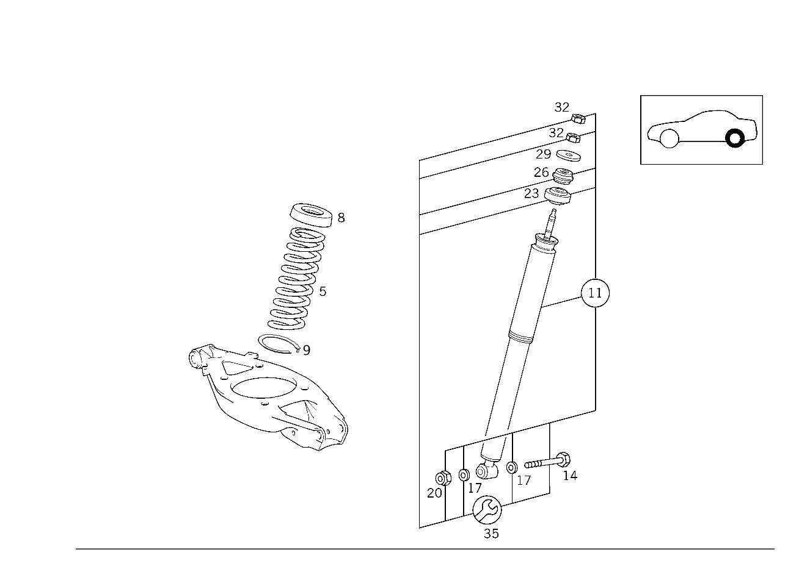

| № | Артикул | Название | Кол. | Примечание | Ограничение |
|---|---|---|---|---|---|
| 5 | A 170 324 00 04 | Задняя пружина (HINTERFEDER) | 2 | ЦВЕТ.ОБОЗНАЧ.:1 X СИН. [100] ПРИ ЗАМЕНЕ ПРУЖИНЫ(РЕССОРЫ) В ОБЯЗАТЕЛЬНОМ ПОРЯДКЕ ЗАМЕНЯТЬ ТАКЖЕ НИЖНЮЮ ПРОКЛАДКУ [015] ДЛЯ ПОДБОРА ЗАДНИХ ПРУЖИН СЛЕДУЕТ СЛОЖИТЬ ЧИСЛО ТОЧЕК ДЛЯ СООТВЕТСТВУЮЩЕГО ТИПОРЯДА И УСТАНОВЛЕННОГО СПЕЦ.ИСПОЛНЕНИЯ ИЗ НИЖЕПРИВЕДЕННОЙ ТАБЛИЦЫ ============================================================================================================================== ТИПОРЯД ЧИСЛО ТОЧЕК КОД СПЕЦ.ИСПОЛНЕНИЕ ЧИСЛО ТОЧЕК 669 ЗАПАСНОЕ КОЛЕСО 3 425 АКП 1 170.447 50 580 КЛИМАТ. УСТАН. 1 810 АУДИО- СИСТЕМА 1 =============================================================== =============================================================== ТАБЛИЦА ЗАДН. ПРУЖИНЫ - РЕЗИН. ВСТАВКИ =============================================================== =============================================================== СУММА ТОЧЕК ЗАДНИХ ПРУЖИН ПРОСТАВКА -54 202 324 30 04 210 325 03 84 . 55- 170 324 00 04 210 325 01 84 ============================================================================================================================== | |
| 5 | A 202 324 30 04 | Задняя пружина (HINTERFEDER) | 2 | ЦВЕТ. ОБОЗНАЧЕНИЕ: 1 X ЖЕЛТ. / 2 X СЕР. [402] БОЛЬШЕ НЕ ПОСТАВЛЯЕТСЯ [100] ПРИ ЗАМЕНЕ ПРУЖИНЫ(РЕССОРЫ) В ОБЯЗАТЕЛЬНОМ ПОРЯДКЕ ЗАМЕНЯТЬ ТАКЖЕ НИЖНЮЮ ПРОКЛАДКУ [015] ДЛЯ ПОДБОРА ЗАДНИХ ПРУЖИН СЛЕДУЕТ СЛОЖИТЬ ЧИСЛО ТОЧЕК ДЛЯ СООТВЕТСТВУЮЩЕГО ТИПОРЯДА И УСТАНОВЛЕННОГО СПЕЦ.ИСПОЛНЕНИЯ ИЗ НИЖЕПРИВЕДЕННОЙ ТАБЛИЦЫ ============================================================================================================================== ТИПОРЯД ЧИСЛО ТОЧЕК КОД СПЕЦ.ИСПОЛНЕНИЕ ЧИСЛО ТОЧЕК 669 ЗАПАСНОЕ КОЛЕСО 3 425 АКП 1 170.447 50 580 КЛИМАТ. УСТАН. 1 810 АУДИО- СИСТЕМА 1 =============================================================== =============================================================== ТАБЛИЦА ЗАДН. ПРУЖИНЫ - РЕЗИН. ВСТАВКИ =============================================================== =============================================================== СУММА ТОЧЕК ЗАДНИХ ПРУЖИН ПРОСТАВКА -54 202 324 30 04 210 325 03 84 . 55- 170 324 00 04 210 325 01 84 ============================================================================================================================== | |
| 8 | A 210 325 01 84 | Втулка тарелки пружины (FEDERTELLEREINSATZ) | 2 | ПО ПОТРЕБН.;КОЛИЧ.ШИШЕК: 1 (5 MM ) [015] ДЛЯ ПОДБОРА ЗАДНИХ ПРУЖИН СЛЕДУЕТ СЛОЖИТЬ ЧИСЛО ТОЧЕК ДЛЯ СООТВЕТСТВУЮЩЕГО ТИПОРЯДА И УСТАНОВЛЕННОГО СПЕЦ.ИСПОЛНЕНИЯ ИЗ НИЖЕПРИВЕДЕННОЙ ТАБЛИЦЫ ============================================================================================================================== ТИПОРЯД ЧИСЛО ТОЧЕК КОД СПЕЦ.ИСПОЛНЕНИЕ ЧИСЛО ТОЧЕК 669 ЗАПАСНОЕ КОЛЕСО 3 425 АКП 1 170.447 50 580 КЛИМАТ. УСТАН. 1 810 АУДИО- СИСТЕМА 1 =============================================================== =============================================================== ТАБЛИЦА ЗАДН. ПРУЖИНЫ - РЕЗИН. ВСТАВКИ =============================================================== =============================================================== СУММА ТОЧЕК ЗАДНИХ ПРУЖИН ПРОСТАВКА -54 202 324 30 04 210 325 03 84 . 55- 170 324 00 04 210 325 01 84 ============================================================================================================================== | |
| 8 | A 210 325 02 84 | Резиновая прокладка (GUMMIBEILAGE) | 2 | ПО ПОТРЕБН.;КОЛИЧ.ШИШЕК: 2 (9 MM) [015] ДЛЯ ПОДБОРА ЗАДНИХ ПРУЖИН СЛЕДУЕТ СЛОЖИТЬ ЧИСЛО ТОЧЕК ДЛЯ СООТВЕТСТВУЮЩЕГО ТИПОРЯДА И УСТАНОВЛЕННОГО СПЕЦ.ИСПОЛНЕНИЯ ИЗ НИЖЕПРИВЕДЕННОЙ ТАБЛИЦЫ ============================================================================================================================== ТИПОРЯД ЧИСЛО ТОЧЕК КОД СПЕЦ.ИСПОЛНЕНИЕ ЧИСЛО ТОЧЕК 669 ЗАПАСНОЕ КОЛЕСО 3 425 АКП 1 170.447 50 580 КЛИМАТ. УСТАН. 1 810 АУДИО- СИСТЕМА 1 =============================================================== =============================================================== ТАБЛИЦА ЗАДН. ПРУЖИНЫ - РЕЗИН. ВСТАВКИ =============================================================== =============================================================== СУММА ТОЧЕК ЗАДНИХ ПРУЖИН ПРОСТАВКА -54 202 324 30 04 210 325 03 84 . 55- 170 324 00 04 210 325 01 84 ============================================================================================================================== | |
| 8 | A 210 325 03 84 | Резиновая прокладка (GUMMIBEILAGE) | 2 | ПО ПОТРЕБН.;КОЛИЧ.ШИШЕК: 3 (13 MM) [015] ДЛЯ ПОДБОРА ЗАДНИХ ПРУЖИН СЛЕДУЕТ СЛОЖИТЬ ЧИСЛО ТОЧЕК ДЛЯ СООТВЕТСТВУЮЩЕГО ТИПОРЯДА И УСТАНОВЛЕННОГО СПЕЦ.ИСПОЛНЕНИЯ ИЗ НИЖЕПРИВЕДЕННОЙ ТАБЛИЦЫ ============================================================================================================================== ТИПОРЯД ЧИСЛО ТОЧЕК КОД СПЕЦ.ИСПОЛНЕНИЕ ЧИСЛО ТОЧЕК 669 ЗАПАСНОЕ КОЛЕСО 3 425 АКП 1 170.447 50 580 КЛИМАТ. УСТАН. 1 810 АУДИО- СИСТЕМА 1 =============================================================== =============================================================== ТАБЛИЦА ЗАДН. ПРУЖИНЫ - РЕЗИН. ВСТАВКИ =============================================================== =============================================================== СУММА ТОЧЕК ЗАДНИХ ПРУЖИН ПРОСТАВКА -54 202 324 30 04 210 325 03 84 . 55- 170 324 00 04 210 325 01 84 ============================================================================================================================== | |
| 8 | A 210 325 04 84 | Резиновая прокладка (GUMMIBEILAGE) | 2 | ПО ПОТРЕБН.;КОЛИЧ.ШИШЕК: 4 (17 MM) [015] ДЛЯ ПОДБОРА ЗАДНИХ ПРУЖИН СЛЕДУЕТ СЛОЖИТЬ ЧИСЛО ТОЧЕК ДЛЯ СООТВЕТСТВУЮЩЕГО ТИПОРЯДА И УСТАНОВЛЕННОГО СПЕЦ.ИСПОЛНЕНИЯ ИЗ НИЖЕПРИВЕДЕННОЙ ТАБЛИЦЫ ============================================================================================================================== ТИПОРЯД ЧИСЛО ТОЧЕК КОД СПЕЦ.ИСПОЛНЕНИЕ ЧИСЛО ТОЧЕК 669 ЗАПАСНОЕ КОЛЕСО 3 425 АКП 1 170.447 50 580 КЛИМАТ. УСТАН. 1 810 АУДИО- СИСТЕМА 1 =============================================================== =============================================================== ТАБЛИЦА ЗАДН. ПРУЖИНЫ - РЕЗИН. ВСТАВКИ =============================================================== =============================================================== СУММА ТОЧЕК ЗАДНИХ ПРУЖИН ПРОСТАВКА -54 202 324 30 04 210 325 03 84 . 55- 170 324 00 04 210 325 01 84 ============================================================================================================================== | |
| 9 | A 203 324 00 84 | Прокладка рессоры (FEDERAUFLAGE) | 2 | ||
| 11 | A 170 320 00 31 | АМОРТИЗАТОР | 2 | ОБЪЁМ ПОСТАВКИ [200] ЗАМЕНЯТЬ ТОЛЬКО ПАРАМИ | |
| 14 | N 000960 010058 | Винт | 2 | АМОРТИЗАТОР К РЫЧАГУ АМОРТИЗАЦИОННОЙ СТОЙКИ | |
| 17 | N 000125 010518 | Шайба | - | ||
| 17 | N 000125 010532 | Шайба | 4 | АМОРТИЗАТОР К РЫЧАГУ АМОРТИЗАЦИОННОЙ СТОЙКИ | |
| 20 | N 913004 010011 | Гайка | 2 | АМОРТИЗАТОР К РЫЧАГУ АМОРТИЗАЦИОННОЙ СТОЙКИ | |
| 23 | A 202 326 04 68 | Резиновый буфер (ELASTOMERPUFFER) | 2 | АМОРТИЗАТОР К РАМЕ | |
| 26 | A 202 326 01 68 | Резиновый буфер (ELASTOMERRING) | 2 | АМОРТИЗАТОР К РАМЕ | |
| 29 | A 202 326 00 76 | Диск (SCHEIBE) | 2 | АМОРТИЗАТОР К РАМЕ | |
| 32 | N 000934 010015 | Гайка | - | ||
| 32 | N 308673 010000 | Шестигранная гайка (SECHSKANTMUTTER) | 4 | АМОРТИЗАТОР К РАМЕ; M10X1 | |
| 35 | A 202 320 00 56 | РЕМКОМПЛЕКТ | - | ||
| 35 | A 202 320 02 56 | Крепежные детали | 2 | КРЕПЛЕНИЕ АМОРТИЗАТ. СЗАДИ |
Позиций: 19 · подписано на схемах: 19 · колесо — плавный зум в курсор, перетаскивание — пан, двойной клик — зум, клик по артикулу — скопировать · наведите на строку или цифру на схеме — подсветка связки, клик — закрепить.